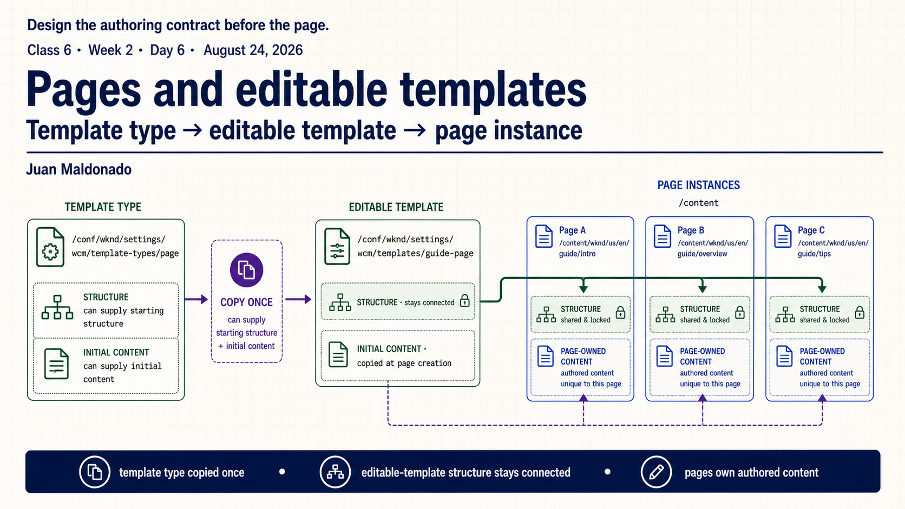
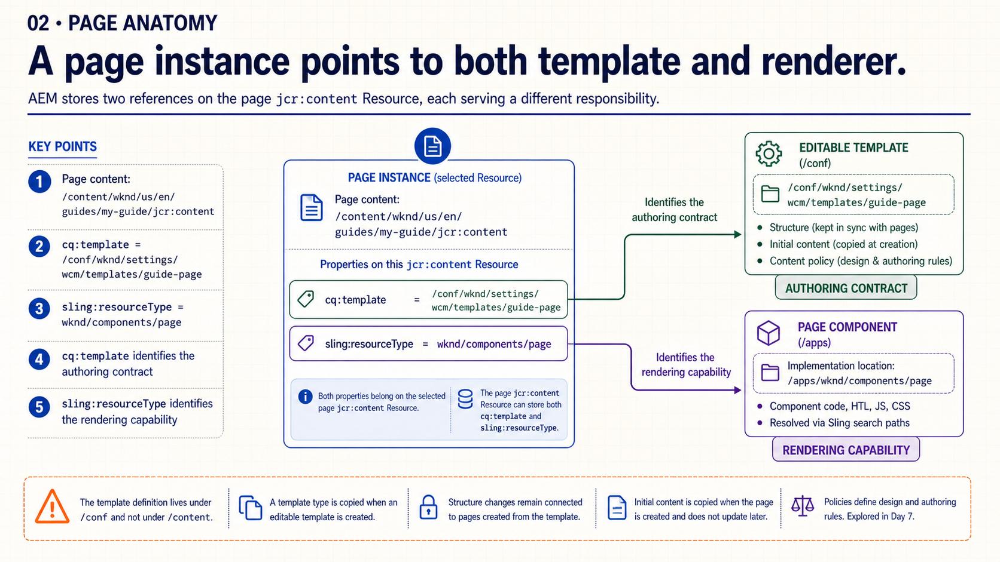
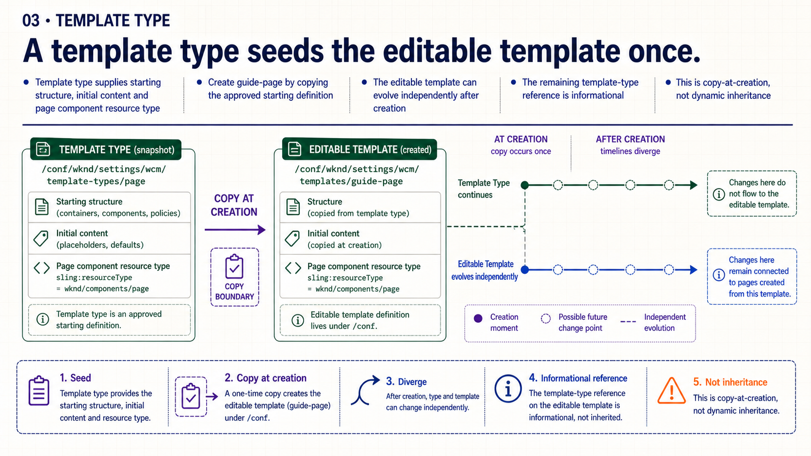
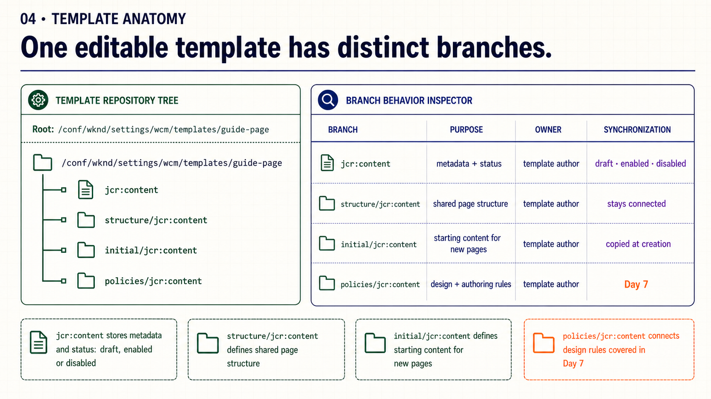
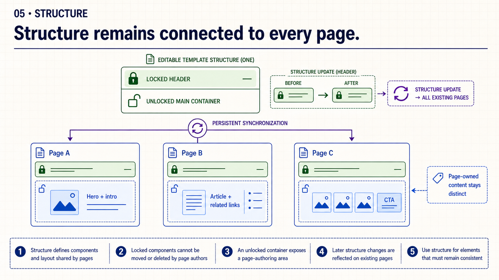
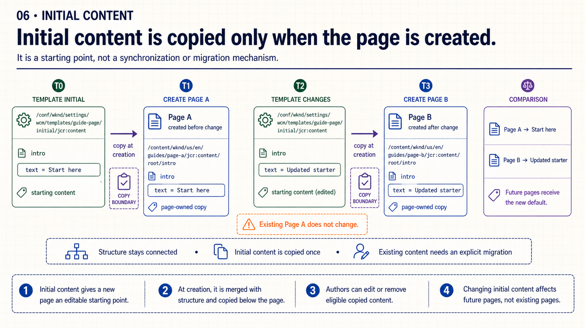
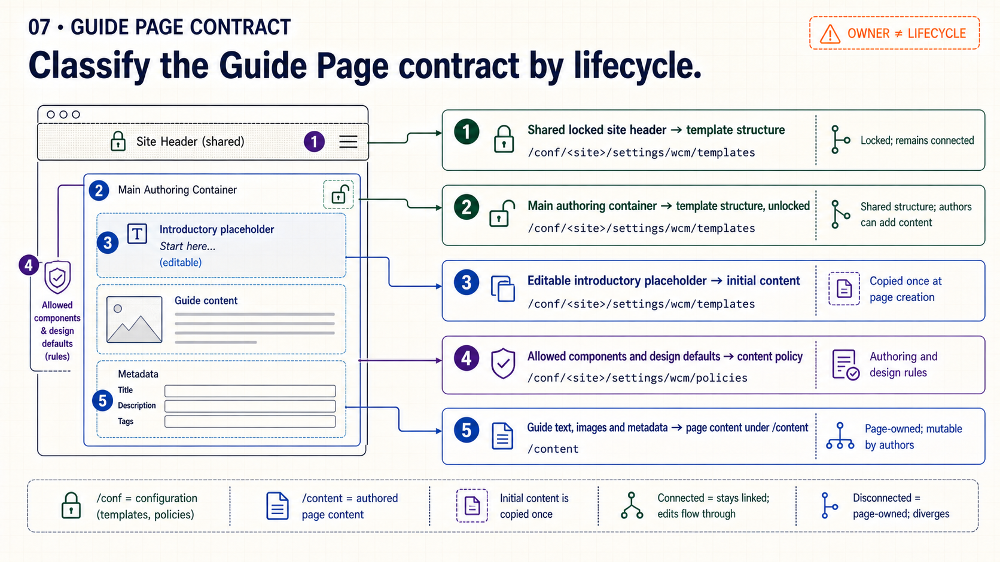
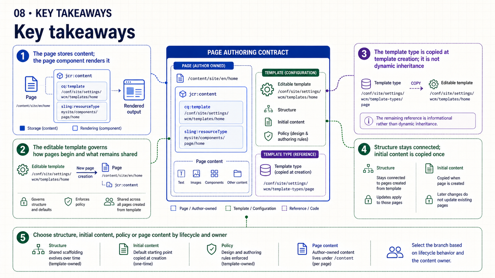
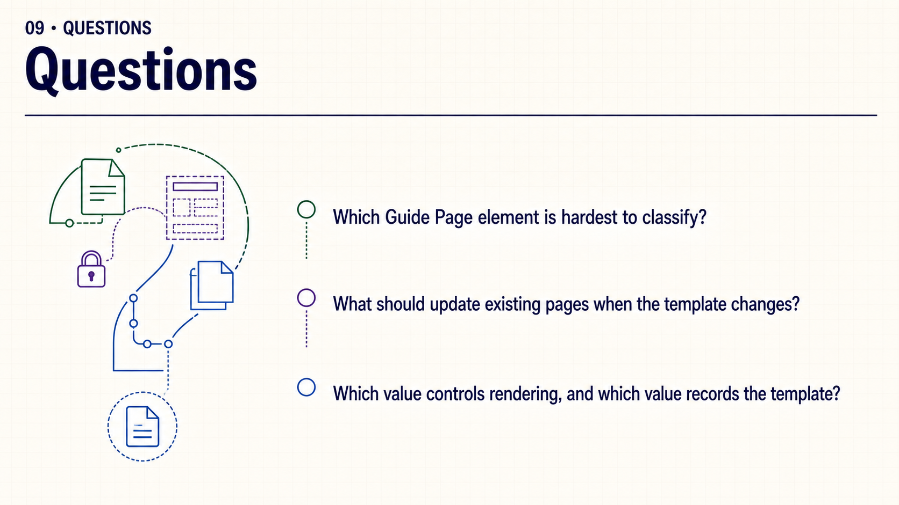

{kind=link}
Open: “Which parts of a page should remain shared across every instance?”
Class 6 · Week 2 · Day 6 · August 24, 2026
Separate template type, shared structure, creation-time defaults, design policy and page-owned content by lifecycle.
cq:template, sling:resourceType, structure and initial.| Time | Activity | Facilitation |
|---|---|---|
| 0–3 | Retrieval | Ask: “Which property explains rendering, and which property records the template?” |
| 3–18 | Slides 1–6 | Build the page, template-type, repository-branch and synchronization models. |
| 18–25 | Slide 7 | Classify the Guide Page contract using ownership and change frequency. |
| 25–27 | Slide 8 | Retrieve the five lifecycle distinctions. |
| 27–30 | Slide 9 | Questions only; no live demonstration dependency. |
Choose Copy slide as image and paste it into PowerPoint, or download the PNG.

Open: “Which parts of a page should remain shared across every instance?”

Emphasize: cq:template identifies the authoring contract; sling:resourceType identifies rendering capability.

Say explicitly: the template-type reference is informational, not dynamic inheritance.

Inspect: read each branch as a different lifecycle contract, not merely a console tab.

Contrast: a locked header propagates; content inside the unlocked container remains page-owned.

Rule: changing initial content affects future pages, not existing pages.

Classify: use owner plus synchronization behavior, not visual position.

Retrieve: ask which branch should own one new Guide Page element and why.

Close: invite questions without requiring a live environment.
The complete talk track is available in speech.md.
Practice bridge: begin Week 2 · Create the Guide Page authoring contract. Detailed policy work continues in Day 7.
{kind=link}
{kind=link}
{kind=link}
{kind=link}
{kind=link}
{kind=link}
{kind=link}
{kind=link}